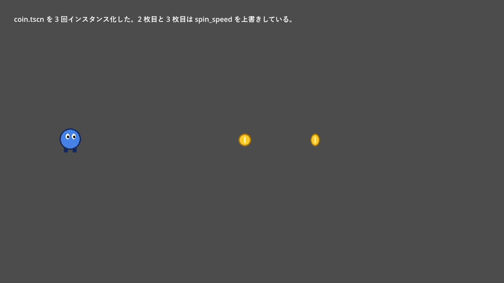

第 5 章 ノードとシーン
Godot でゲームを作るときに最も重要な考え方が、ノードとシーンである。本章では、ノードとシーンとは何か、どのように組み合わせてゲームを作るのかを説明する。
ノード
ノード（node）は、ゲームを組み立てる最小の部品である。ノードには多くの種類があり、それぞれが 1 つの役割を持つ。
ノード |
役割 |
|---|---|
|
2D 空間での位置、回転、拡大率を持つ。2D の物体の基本となるノード |
|
画像（テクスチャ）を表示する。 |
|
衝突判定に使う形状（円や長方形など）を表す。 |
|
プレイヤーのように、スクリプトで動かす物理的な物体 |
|
ほかの物体が入ってきたことを検出する領域 |
|
文字列を表示する UI 部品 |
|
一定時間ごとに通知を出すタイマー |
|
音を再生する。 |
|
画面に映す範囲を決めるカメラ |
ノードの種類は、オブジェクト指向プログラミングのクラスに対応している。実際に、エディターで追加するノードはエンジンに定義されたクラスのインスタンスであり、スクリプトからは同じ名前のクラスとして扱える。クラスは継承関係にあり、例えば Sprite2D は Node2D を継承しているので、Node2D が持つ位置や回転のプロパティを Sprite2D も持つ。
図 4 主なノードのクラスの継承関係（一部）
図の矢印は「継承元」を指す。2D の物体は Node2D の系統、UI の部品は Control の系統、3D の物体は Node3D の系統に属する。Node2D と Control はどちらも画面に描画されるもので、共通の祖先として CanvasItem を持つ。
ノードの木構造
ノードは親子関係を持ち、木構造を作る。子ノードの位置や回転は、親ノードからの相対値で表される。そのため、親ノードを動かすと子ノードも一緒に動く。例えば、プレイヤーのノードの子として画像のノードと衝突形状のノードを置けば、プレイヤーを動かすだけで、見た目と当たり判定がそろって移動する。
図 5 プレイヤーを表すノードの木構造の例
1 つのノードは 1 つの役割しか持たない。複雑な物体は、単純なノードを組み合わせて表現する。これが Godot の基本的な設計方針である。
シーン
ノードの木構造をファイルに保存したものをシーン（scene）と呼ぶ。シーンファイルの拡張子は .tscn である。第 3 章 環境構築 で作った hello.tscn もシーンである。
Godot のシーンは、ゲームの「1 画面」や「1 ステージ」だけを指す言葉ではない。プレイヤー、敵、コイン、弾、UI の部品など、再利用したいまとまりは何でもシーンにする。シーンは、別のシーンの中に部品として何個でも配置できる。これをシーンのインスタンス化と呼ぶ。
Godot |
オブジェクト指向プログラミング |
|---|---|
シーン（ |
クラスの定義 |
シーンのインスタンス |
クラスのインスタンス（オブジェクト） |
インスタンスごとにプロパティの値を変える |
コンストラクターに異なる引数を渡す |
シーンの中に別のシーンを配置する |
別のクラスのインスタンスをフィールドに持つ（コンポジション） |
Unity を知っている読者向けに補足すると、Godot のシーンは Unity のシーンとプレハブの両方の役割を兼ねている。
例：コインのシーンを再利用する
サンプルの chapter05 フォルダーには、回転するコインのシーン coin.tscn と、それを 3 個配置したステージのシーン level.tscn がある。
図 6 coin.tscn と level.tscn のノードの構成
コインのスクリプトは次のとおりである。
1extends Area2D
2## 回転し続けるコイン。プレイヤーが触れると消える。
3
4## 1 秒あたりの回転量 [ラジアン]
5@export var spin_speed: float = 3.0
6
7var _angle: float = 0.0
8
9
10func _process(delta: float) -> void:
11 # 画像の横幅を cos で伸び縮みさせて、縦の軸で回っているように見せる。
12 _angle += spin_speed * delta
13 $Sprite2D.scale.x = cos(_angle)
14
15
16func _on_body_entered(body: Node2D) -> void:
17 if body.is_in_group("player"):
18 queue_free()
5 行目の @export を付けた変数は、インスペクターに表示され、エディターから値を変更できる。level.tscn では、3 枚のコインのうち 2 枚の spin_speed をインスペクターで上書きしている。元の coin.tscn を編集すると、上書きしていないプロパティの変更は 3 枚すべてに反映される。


図 7 level.tscn の実行結果
シーンを作る手順
coin.tscn は次の手順で作る。
「シーン」→「新規シーン」を選び、シーンドックの「その他のノード」から
Area2Dを選んでルートノードにする。名前をCoinに変える。Coinの子としてSprite2Dを追加し、インスペクターの「テクスチャ」（texture）にassets/coin.pngをドラッグする。Coinの子としてCollisionShape2Dを追加し、「シェイプ」（shape）で「新規 CircleShape2D」を選ぶ。ビューポートに表示される円の大きさを、画像に合わせて調整する。coin.tscnという名前で保存し、Coinにスクリプトをアタッチする。
level.tscn では、ファイルシステムドックから coin.tscn をビューポートへドラッグして配置する。
シーンファイルの中身
.tscn ファイルはテキスト形式なので、Git などで差分を確認できる。coin.tscn の中身は次のとおりである。普段はエディターで編集するので、直接書き換える必要はない。
1[gd_scene format=3]
2
3[ext_resource type="Script" path="res://chapter05/coin.gd" id="1_coin"]
4[ext_resource type="Texture2D" path="res://assets/coin.png" id="2_tex"]
5
6[sub_resource type="CircleShape2D" id="CircleShape2D_coin"]
7radius = 14.0
8
9[node name="Coin" type="Area2D"]
10collision_layer = 8
11collision_mask = 2
12script = ExtResource("1_coin")
13
14[node name="Sprite2D" type="Sprite2D" parent="."]
15texture = ExtResource("2_tex")
16
17[node name="CollisionShape2D" type="CollisionShape2D" parent="."]
18shape = SubResource("CircleShape2D_coin")
19
20[connection signal="body_entered" from="." to="." method="_on_body_entered"]
[ext_resource] は外部ファイル（スクリプトや画像）の参照、[sub_resource] はシーンの中で定義したリソース（ここでは円の形状）、[node] はノードとそのプロパティ、[connection] は後述するシグナルの接続を表す。既定値から変更したプロパティだけが記録される。
実行中のシーンツリー
ゲームを実行すると、Godot はシーンツリー（SceneTree）を作り、その中でノードを動かす。シーンツリーの根は root という名前のウィンドウ（Window）で、その子として現在のシーンが配置される。第 15 章 シーン管理とデータ で説明するオートロードのノードも、root の子に置かれる。
図 8 実行中のシーンツリーの例（サンプルプロジェクトで level.tscn を実行した場合）
ノードがシーンツリーに追加されると、Godot はそのノードの決まった関数（_ready() や _process() など）を、決まったタイミングで呼び出す。これらの関数については 第 6 章 GDScript の基礎 で説明する。
スクリプトからノードを操作する
ノードを取得する
スクリプトから別のノードを使うには、まずそのノードを取得する。
書き方 |
意味 |
|---|---|
|
子ノード |
|
子の子など、パスで指定したノードを取得する。 |
|
シーン固有名を付けたノードを、階層に関係なく取得する（後述）。 |
|
親ノードを取得する。 |
|
子ノードの配列を取得する。 |
パスで指定する方法は、ノードの階層を変えると動かなくなる。UI のように階層が深くなりやすいシーンでは、シーン固有名を使うとよい。シーンドックでノードを右クリックし、「固有名でアクセス」を選ぶと、ノード名の横に % が表示され、スクリプトから %ノード名 で取得できるようになる。
ノードを生成・削除する
ゲームの実行中に敵や弾を出現させるには、シーンを読み込んでインスタンスを作り、シーンツリーに追加する。
1const COIN_SCENE: PackedScene = preload("res://chapter05/coin.tscn")
2
3
4func spawn_coin(at: Vector2) -> void:
5 var coin := COIN_SCENE.instantiate() as Node2D
6 coin.position = at
7 add_child(coin)
preload() は、スクリプトを読み込む時点でシーンファイルを読み込む。instantiate() でノードの木構造を作り、add_child() で自分の子として追加すると、画面に表示されて動き始める。
ノードを削除するには queue_free() を呼ぶ。削除は現在のフレームの処理が終わってから行われるので、同じフレームの中で削除したノードに触れても安全である。子ノードは親と一緒に削除される。
注釈
Python のオブジェクトと異なり、ノードは参照がなくなっても自動では解放されない。シーンツリーから外しただけのノードはメモリーに残り続ける。不要になったノードは必ず queue_free() で削除する。一方、画像やシーンファイルなどのリソース（Resource）は参照カウントで管理されており、使われなくなると自動で解放される。
グループ
グループは、ノードに付けるタグのようなものである。1 つのノードは複数のグループに所属できる。グループを使うと、「すべての敵」や「すべてのコイン」をまとめて扱える。
ノードをグループに追加するには、ノードを選んで「グループ」ドックでグループ名を追加するか、スクリプトで add_to_group("enemies") を呼ぶ。
メソッド |
内容 |
|---|---|
|
ノードがグループに属しているかを調べる。 |
|
グループに属するノードの配列を返す。 |
|
グループに属するすべてのノードのメソッドを呼ぶ。 |
coin.gd の _on_body_entered() では、触れた物体が player グループに属しているかを確かめてからコインを消している。こうすると、プレイヤー以外の物体（例えば敵）が触れてもコインは消えない。
シーンを設計するときの考え方
Godot でシーンを設計するときは、次の方針が役に立つ。
小さなシーンを組み合わせる：プレイヤー、敵、UI などをそれぞれ独立したシーンにし、ステージのシーンでそれらを組み合わせる。それぞれのシーンを単独で実行してテストできるようにしておくと、開発が楽になる。
継承よりも合成：機能を追加するときは、スクリプトの継承を深くするよりも、機能を持つ子ノードを追加することを考える。例えば体力の管理を
Healthノードとして独立させれば、プレイヤーにも敵にも使い回せる（第 7 章 GDScript の応用 で実例を示す）。呼び出しは下へ、通知は上へ：親は子のメソッドを直接呼んでよい。子が親に何かを伝えたいときは、親を直接操作せず、シグナル（第 7 章 GDScript の応用）を発行して親に受け取ってもらう。こうすると、子のシーンが親の構造に依存しなくなり、再利用しやすくなる。